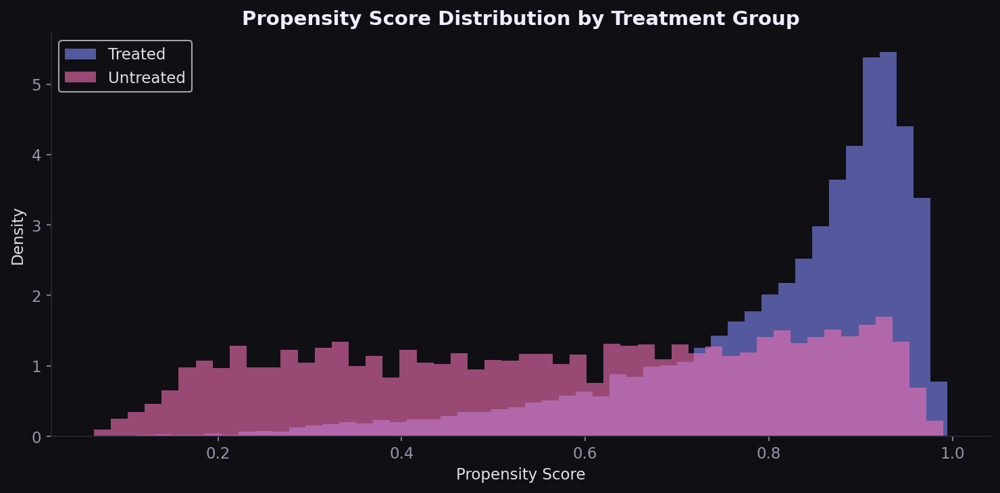
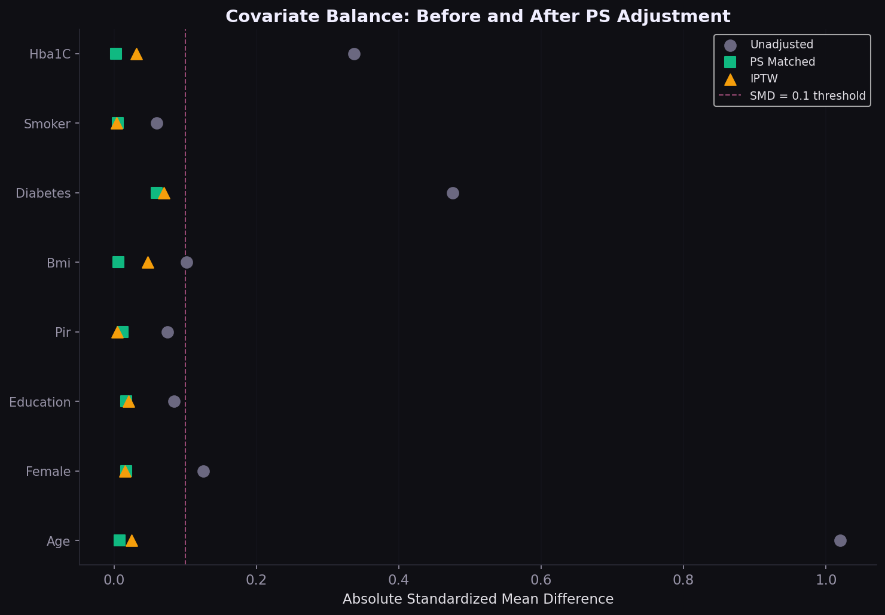
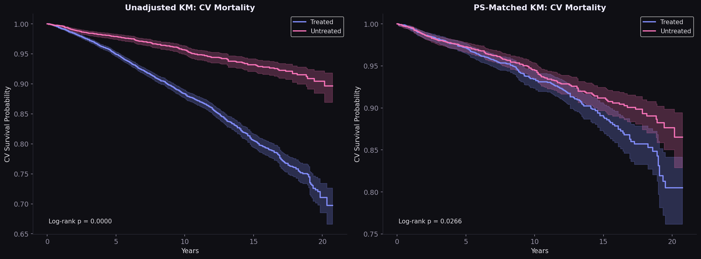
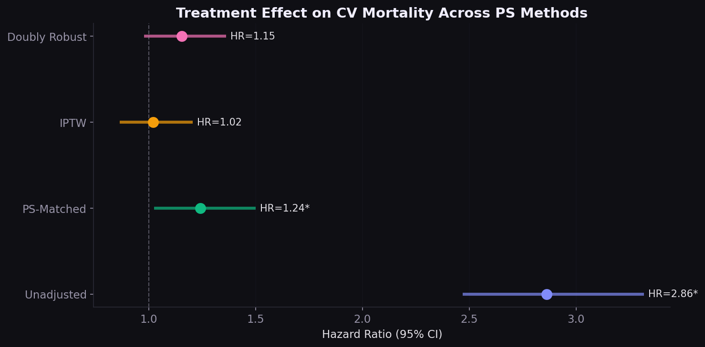
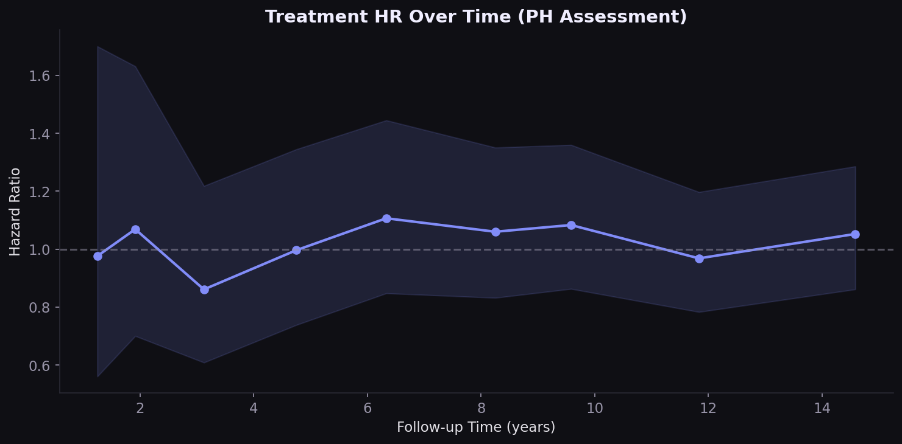
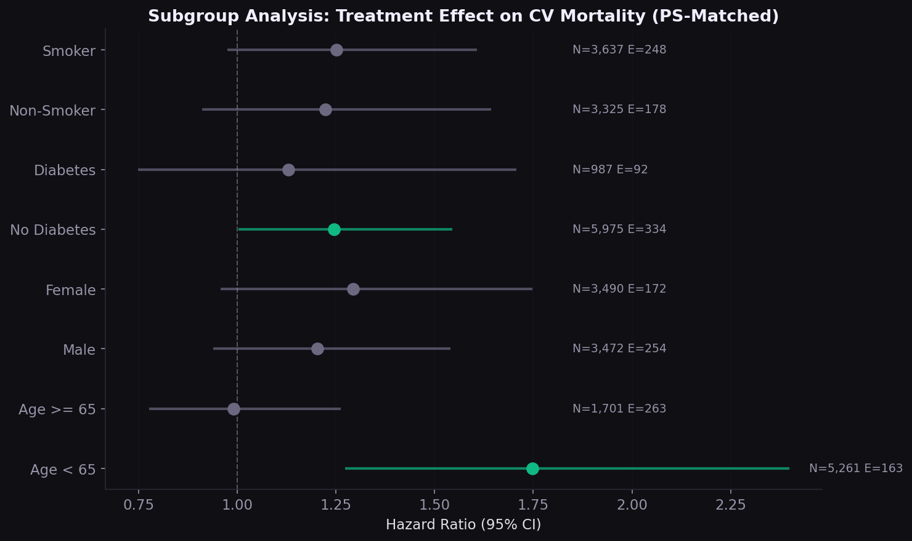

Does antihypertensive treatment reduce cardiovascular mortality? A comparative effectiveness study using propensity score matching, IPTW, and Cox models on 20 years of NHANES data.
In claims and survey data, patients who receive treatment are systematically different from those who don't. They're older, sicker, and have more comorbidities. A naive comparison of outcomes will conflate treatment assignment with disease severity. In this cohort, the unadjusted hazard ratio is 2.86, suggesting antihypertensives increase cardiovascular death. That's confounding by indication, not a treatment effect.
I built the entire propensity score pipeline from raw NHANES data to Cox models, implementing three complementary approaches to isolate the treatment effect.
The propensity score model achieves 81% accuracy, reflecting the systematic differences between treated and untreated groups. The distributions overlap but are clearly separated: treated patients cluster at higher PS values (median 0.87 vs 0.59).

The Love plot is the diagnostic that regulators and journal reviewers look for. Age, the strongest confounder (SMD 0.70 unadjusted), drops below 0.1 after both matching and IPTW. All covariates fall below the conventional 0.1 threshold.

The unadjusted Kaplan-Meier shows dramatic separation (treated patients dying faster because they are sicker). After PS matching, the curves converge substantially. The remaining gap is small and may reflect residual confounding by unmeasured variables like medication adherence and specific drug classes.

Four Cox PH models show how the estimated treatment effect changes under increasing confounding control. The unadjusted HR of 2.86 is entirely driven by confounding. After IPTW, the HR is 1.02 with a wide confidence interval crossing 1.0.

The proportional hazards assumption is borderline violated for treatment (p=0.035). The HR is higher in early follow-up and attenuates over time, consistent with the clinical expectation: sicker patients start treatment, but the protective effect of BP control accrues gradually over years.

The subgroup forest plot tests whether the treatment effect varies by age, sex, diabetes, and smoking status. Consistent effect direction across subgroups strengthens the primary analysis and can inform targeted treatment strategies.

| Finding | Implication |
|---|---|
| Unadjusted HR reverses after PS adjustment | Observational analyses require rigorous confounding control for formulary and coverage decisions |
| HR varies 1.02-1.24 across methods | Sensitivity analysis across PS approaches is non-negotiable for HEOR submissions |
| PH assumption borderline violated | Time-varying treatment effects should be explored; standard Cox may mask delayed benefit |
| 3,481 pairs from 18,129 | Matching discards data; IPTW preserves the full sample and may be preferable when overlap is limited |
| Self-reported treatment | Claims-based identification (NDC codes, pharmacy fills) would strengthen real-world analyses |
Merged 7 NHANES survey components per cycle across 10 cycles (1999-2018), plus fixed-width mortality linkage files with custom parser. Cohort restricted to adults 20+ with self-reported hypertension diagnosis. PS model: logistic regression on 12 covariates. Matching: greedy 1:1 nearest-neighbor on logit PS with 0.2 SD caliper. IPTW: ATE weights trimmed at 99th percentile (cap 15.4). Cox models fit with lifelines, robust standard errors for weighted analyses. All code from scratch with no black-box PS packages.
Interested in causal inference, comparative effectiveness, or HEOR methods?
Get in touch